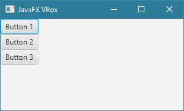
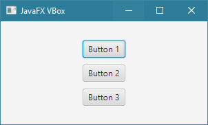
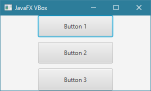
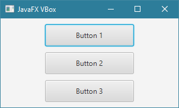
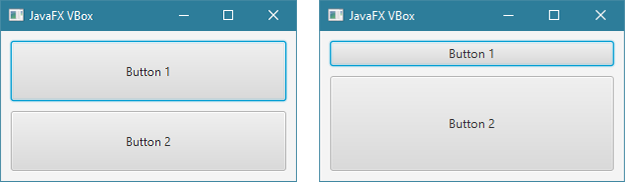

مقدمة
الكلاس VBox يستخدم لإنشاء حاوية ترتب الأشياء التي نضيفها فيها بشكل عامودي.
إفتراضياً, الأشياء التي نضيفها في كائن الـVBox تظهر في الأعلى من جهة اليسار.
و طبعاً تستطيع تحديد من أي جهة تريد أن تظهر الأشياء التي يتم إضافتها فيه.
حجم كائن الـ VBox يمكن تحديده, و يمكن تحديد ما إذا كانت الأشياء بداخله سيتغير حجمها مع تغيّر حجمه أم أن حجمها ثابت لا يتغير.
حجم الفراغ بين الأشياء التي نضيفها فيه يمكن تحديده من جميع الإتجاهات.
بناء الكلاس VBox
public class VBoxextends Pane
كونستركتورات الكلاس VBox
الجدول التالي يحتوي على كونستركتورات الكلاس VBox.
| الكونستركتور مع تعريفه |
VBox() ينشئ كائن من الكلاس VBox يمثل حاوية فارغة ترتب الأشياء التي نضيفها فيها بشكل عامودي. |
VBox(double spacing) ينشئ كائن من الكلاس VBox يمثل حاوية فارغة ترتب الأشياء التي نضيفها فيها بشكل عامودي مع تحديد المسافة الفارغة بين الأشياء التي نضيفها فيها.
مكان الباراميتر spacing نمرر رقم يمثل حجم المسافة الفارغة التي سيتم وضعها بين الأشياء التي نضيفها فيها. |
VBox(Node... children) ينشئ كائن من الكلاس VBox يمثل حاوية ترتب الأشياء التي نضيفها فيها بشكل عامودي مع تحديد الأشياء التي نريد وضعها فيها.
مكان الباراميتر children نمرر الأشياء التي نريد وضعها فيها مع وضع فاصلة بين كل شيئين. |
VBox(double spacing, Node... children) ينشئ كائن من الكلاس VBox يمثل حاوية ترتب الأشياء التي نضيفها فيها بشكل عامودي مع تحديد الأشياء التي نريد وضعها فيها و المسافة الفارغة بينهم.
مكان الباراميتر spacing نمرر رقم يمثل حجم المسافة الفارغة التي سيتم وضعها بين الأشياء التي نضيفها فيها.
مكان الباراميتر children نمرر الأشياء التي نريد وضعها فيها مع وضع فاصلة بين كل شيئين. |
دوال الكلاس VBox
الجدول التالي يحتوي على دوال الكلاس VBox الأكثر إستخداماً.
| الدالة مع تعريفها |
public void setSpacing(int value) تستخدم لتحديد حجم الفراغ بين كل شيئين يتم إضافتهما في كائن الـ VBox الذي قام باستدعائها.
مكان الباراميتر value نمرر رقم يمثل حجم الفراغ بالـ Pixel. |
public final void setAlignment(Pos value) تستخدم لتحديد مكان ظهور الأشياء التي سيتم وضعها في كائن الـ VBox الذي قام باستدعائها.
مكان الباراميتر value نمرر إحدى ثوابت الكلاس Pos:
TOP_LEFT: يظهر المحتوى في الأعلى ناحية اليسار.
TOP_CENTER: يظهر المحتوى في الأعلى و في الوسط.
TOP_RIGHT: يظهر المحتوى في الأعلى ناحية اليمين.
CENTER_LEFT: يظهر المحتوى في الوسط ناحية اليسار.
CENTER: يظهر المحتوى في الوسط تماماً.
CENTER_RIGHT: يظهر في الوسط ناحية اليمين.
BOTTOM_LEFT: يظهر المحتوى في الأسفل ناحية اليسار.
BOTTOM_CENTER: يظهر المحتوى في الأسفل و في الوسط.
BOTTOM_RIGHT: يظهر المحتوى في الأسفل ناحية اليمين.
|
public final void setFillWidth(boolean value) تستخدم لتحديد ما إذا كانت الأشياء التي سنضيفها في كائن الـ VBox الذي قام باستدعائها ستتأثر بعرضه أم لا.
مكان الباراميتر value نمرر القيمة true في حال أردنا جعل عرض الأشياء يتغير بشكل تلقائي نسبة لطول الـ VBox. |
public static void setMargin(Node child, Insets value) تستخدم لإضافة فراغ حول أي شيء موضوع بداخل VBox.
مكان الباراميتر child نمرر الشيء الذي نريد إضافة فراغ حوله.
مكان الباراميتر value نمرر كائن من الكلاس Insets نحدد فيه حجم الفراغ الذي سيتم إضافته للشيء من الجهات الأربعة ( فوقه, يمينه, تحته, يساره ). |
public static void setVgrow(Node child, Priority value) تستخدم لتحديد ما إذا كان طول الشيء الموضوع بداخل VBox سيتأثر بطوله أم أن طوله سيظل ثابت.
مكان الباراميتر child نمرر الشيء الذي نريد تحديد ما إن كان طوله سيتأثر بطول الـ VBox أم لا.
مكان الباراميتر value نمرر إحدى ثوابت الكلاس Priority التي تحدد ذلك:
ALWAYS: لجعل طول الشيء يظهر على أكبر مساحة متوفرة في كائن الـ VBox.
NEVER: لجعل طول الشيء ثابت لا يتأُثر أبدً بحجم كائن الـ VBox.
SOMETIMES: لجعل طول الشيء يظهر على أكبر مساحة متوفرة في كائن الـ VBox في حال لم يكن هناك أي شيء آخر قد تم تعيينه ليظهر على أكبر مساحة متوفرة فيه.
|
public final void setStyle(String value) تستخدم لتعديل تصميم كائن الـ VBox الذي قام بإستدعائها.
مكان الباراميتر value يمكنك تمرير إسم و قيمة أي خاصية تريد تعديلها في كائن الـ VBox بأسلوب لغة CSS لإظهاره بالشكل الذي تريده. |
public ObservableList<Node> getChildren() ترجع كائن نوعه ObservableList يمثل محتوى كائن الـ VBox الذي قام بإستدعائها مما يجعلك قادراً على إضافة كائنات جديدة أو حذف كائنات موجودة فيه. |
أمثلة شاملة
المثال الأول
المثال التالي يعلمك طريقة إنشاء كائن من الكلاس VBox و وضعه كـ Root Node.

شاهد المثال »
المثال الثاني
المثال التالي يعلمك طريقة إضافة مسافة فارغة بين الأشياء التي نضيفها في VBox.
بالإضافة إلى عرض محتوى الـ VBox في الوسط.

شاهد المثال »
المثال الثالث
المثال التالي يوضح كيف تتغير أحجام الأشياء التي نضعها في VBox كلما تغير حجمه و كيف أن المسافات الفارغة لا تتأثر.

شاهد المثال »
المثال الرابع
المثال التالي يعلمك طريقة إضافة هامش من جميع الإتجاهات لأي شيء تم وضعه في VBox.

شاهد المثال »
المثال الخامس
المثال التالي يعلمك طريقة جعل محتوى الـ VBox يظهر على كل المساحة المتوفرة.

شاهد المثال »
 محرر الويب
محرر الويب نظام الألوان
نظام الألوان محول الوحدات
محول الوحدات محلل عناوين الشبكات
محلل عناوين الشبكات